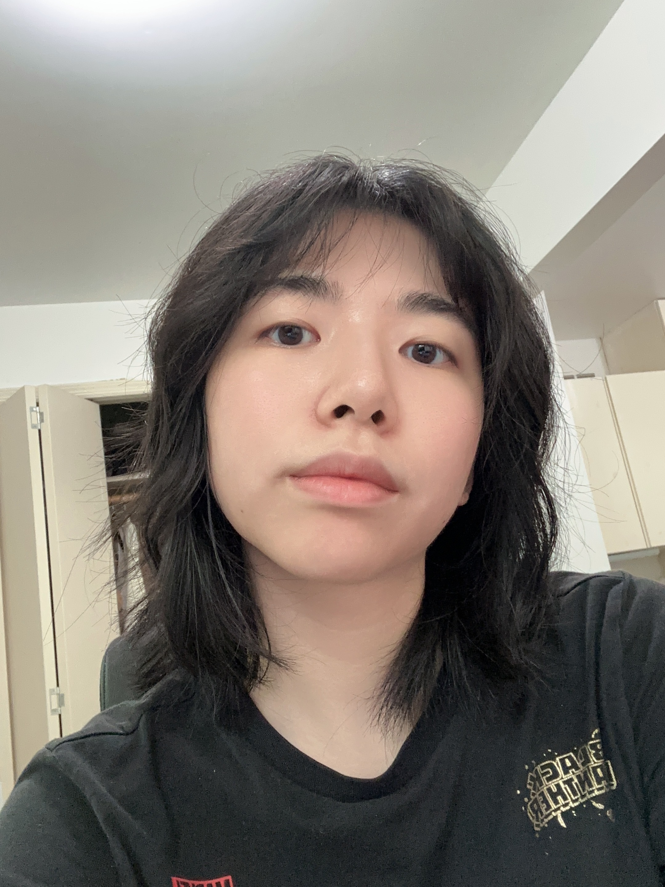

Stephanie Xu
Computer Science | 4th year
Hi! I'm Stephanie and I'm a senior studying Computer Science.
In my free time, I enjoy drawing, yoga, and watching random youtube videos.
I listen to kpop casually and watch kdramas recommended by friends.
- Berkeley Social Club
- Sheng Kee Bakery
- Cafe Strada

Twitter
Reading Responses
- I learned that we can study existing apps to get better at designing apps.
Aside from obvious elements such as layout and content, we can also pay attention
to subtleties such as font and wording.
- I think my favorite part was when the author pointed out the subtle wording used in Twitter.
Such as 'add another tweet' and the differences in timestamp. While I never paid conscious attention
to these choices, I wonder if they have any tangible psychological effects.
-
You develop your design eye by thinking as if you were the designer of a product.
-
8